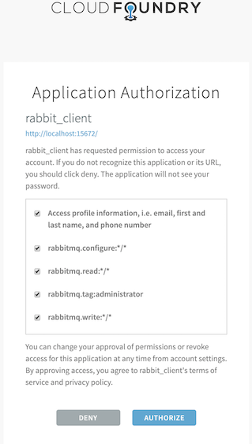
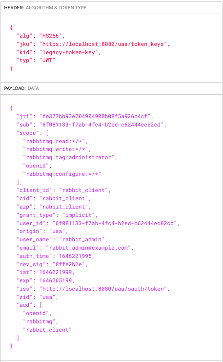
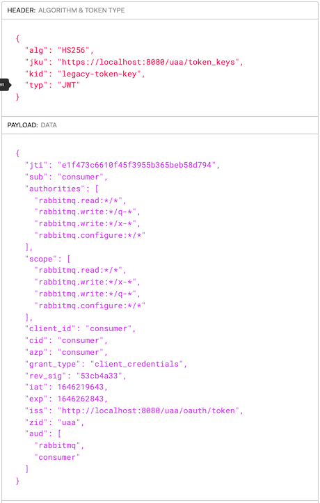

RabbitMQ OAuth 2.0 Auth Backend Examples
Overview
This tutorial-style guide has two primary goals:
- Explore how applications and end users can authenticate with RabbitMQ server using OAuth 2.0 protocol rather than the traditional username/password pairs or x.509 certificates.
- Explore what it takes to set up RabbitMQ Server with OAuth 2.0 authentication mechanism. Additionally it explains how to stand up (UAA) as an OAuth 2.0 Authorization Server and all the operations to create OAuth clients, users and obtain their tokens.
The guide covers several OAuth 2 usage scenarios in the context of RabbitMQ and is accompanied by a public GitHub repository. The GitHub repository includes RabbitMQ and UAA configuration files, as well as Make targets that make it easier to
To understand the details of how to configure RabbitMQ with Oauth2, go to the Understand the environment section.
Table of Content
- Prerequisites to follow this guide
- Getting started with UAA and RabbitMQ
- Access Management UI using OAuth 2.0 tokens
- Access other protocols using OAuth 2.0 tokens
- Management REST api
- Use advanced OAuth 2.0 configuration
- Use different OAuth 2.0 servers
- Understanding the environment
- Deeper Dive
- About Users and Clients
- About Permissions
- About signing key required to configure RabbitMQ
- About rotating UAA signing key
- Understanding Access tokens and how RabbitMQ uses it
Prerequisites Used by the Examples in This Guide
- Docker must be installed
- Ruby must be installed
- make
Getting started with UAA and RabbitMQ
Before proceeding with other more sophisticated examples, let's start RabbitMQ configured with OAuth 2.0 plugin and UAA as the OAuth 2.0 Authorization Server.
In the next section, you will see how to set up UAA and RabbitMQ. If you are new to OAuth 2.0, it is a good starting point. If you already know OAuth 2.0 and you want to learn how to configure RabbitMQ to talk to one of OAuth 2.0 server tested on this tutorial, you can jump straight to them. They are:
Use Asymmetrical Digital Singing Keys
There are two ways to set up OAuth 2.0 in RabbitMQ. One uses symmetrical signing keys. And the other uses asymmetrical signing keys. The Authorization server is who digitally signs the Access tokens and RabbitMQ has to be configured to validate any of the two types of digital signatures.
Given that asymmetrical keys is the most widely used option, you are going to focus on how to configure RabbitMQ with them.
Run the following 2 commands to get the environment ready to see Oauth 2.0 plugin in action:
- make start-uaa to get UAA server running
- make start-rabbitmq to start RabbitMQ server
The last command starts a RabbitMQ server with specific configuration file.
Access Management UI using OAuth 2.0 tokens
The RabbitMQ Management UI can be configured with one of these two login modes:
- Service-Provider initiated logon: this is the default and traditional OAuth 2.0 logon mode. When the user visits the RabbitMQ Management UI, it shows a button with the label Click here to logon. When the user clicks it, the logon process starts by redirecting to the configured Authorization Server.
- Identity-Provider initiated logon: this mode is opposite to the previous mode. The user must first access the RabbitMQ Management's /login endpoint with a token. If the token is valid, the user is allowed to access the RabbitMQ Management UI. This mode is very useful for Web sites which allow users to access the RabbitMQ Management UI with a single click. The original Web site get a token on user's behalf and redirects the user to the RabbitMQ Management's /login endpoint.
Service-Provider initiated logon
The first time an end user arrives to the management UI, they are redirected to the configured OAuth 2.0 provider to authenticate. Once they successfully authenticate, the user is redirected back to RabbitMQ with a valid access token. RabbitMQ validates it and identify the user and its permissions from the token.
[ UAA ] <----2. auth---- [ RabbitMQ ]
----3. redirect--> [ http ]
/|\
|
1. rabbit_admin from a browser
At step 2, if this is the first time the user is accessing RabbitMQ resource, UAA will prompt the user to authorize RabbitMQ application as shown on the screenshot below.

UAA has previously been configured and seeded with two users:
- rabbit_admin:rabbit_admin
- and rabbit_monitor:rabbit_monitor
Now navigating to the local node's management UI and login using any of those two users.
This is a token issued by UAA for the rabbit_admin user thru the redirect flow you just saw above. It was signed with the symmetric key.

To configure the RabbitMQ Management UI with OAuth 2.0, the following configuration entries are required in advanced.config:
...
{rabbitmq_management, [
{oauth_enabled, true},
{oauth_client_id, "rabbit_client_code"},
{oauth_provider_url, "http://localhost:8080"},
...
]},
Identity-Provider initiated logon
Like Service-Provider initiated logon, with Idp-initiated logon users get to the RabbitMQ Management UI with a valid token. The following scenarios are examples of Idp-initiated logon:
- RabbitMQ is behind a web portal which conveniently allow users to navigate directly to RabbitMQ fully authenticated.
- There is an OAuth2 proxy in between users and RabbitMQ which intercepts their requests and forwards them to RabbitMQ inserting the token into the HTTP Authorization header.
The latter scenario is demonstrated here. The former scenario is covered in the following section.
Idp-initiated Logon using the Login Endpoint
A Web portal offers their authenticated users the option to navigate to RabbitMQ by submitting a form with their OAuth token in the access_token form field as provided below:
[ Idp | WebPortal ] ----> 2. /login [access_token: TOKEN]---- [ RabbitMQ Cluster ]
/|\ | /|\
| +--------+
1. rabbit_admin from a browser 3. validate token
If the access token is valid, RabbitMQ redirects the user to the Overview page.
By default, the RabbitMQ Management UI is configured with service-provider initiated logon, to configure Identity-Provider initiated logon, add one entry to advanced.config. For example:
...
{rabbitmq_management, [
{oauth_enabled, true},
{oauth_provider_url, "http://localhost:8080"},
{oauth_initiated_logon_type, idp_initiated},
...
]},
Important: when the user logs out, or its RabbitMQ session expired, or the token expired, the user is directed to the RabbitMQ Management landing page which has a Click here to login button. The user is never automatically redirected back to the url configured in the oauth_provider_url. It is only when the user clicks Click here to login , the user is redirected to the configured url in oauth_provider_url.
Access other protocols using OAuth 2.0 tokens
The following subsections demonstrate how to use access tokens with any messaging protocol and also to access the management rest api.
Management REST api
In this scenario a monitoring agent uses RabbitMQ HTTP API to collect monitoring information. Because it is not an end user, or human, you refer to it as a service account. This service account could be our mgt_api_client client you created in UAA with the monitoring user tag.
This monitoring agent would use the client credentials or password grant flow to authenticate (1) with UAA and get back a JWT token (2). Once it gets the token, it sends (3) a HTTP request to the RabbitMQ management endpoint passing the JWT token within the Authorization header as a Bearer token.
[ UAA ] [ RabbitMQ ]
/|\ [ http ]
| /|\
| 3.http://broker:15672/api/overview passing JWT token
| |
+-----1.auth--------- monitoring agent
--------2.JWT-------->
The following command launches the browser with mgt_api_client client with a JWT token previously obtained from UAA:
make curl-uaa url=http://localhost:15672/api/overview client_id=mgt_api_client secret=mgt_api_client
AMQP protocol
An application connects to RabbitMQ using AMQP protocol and presents a JWT Token as a credential. The application you are going to use is PerfTest which is not an OAuth 2.0 aware application. OAuth 2.0-aware application is covered in scenario four.
Instead you are launching the application with a token that you have previously obtained from UAA. This is just to probe AMQP access with a JWT Token. Needless to say that the application should instead obtain the JWT Token prior to connecting to RabbitMQ and it should also be able to refresh it before reconnecting. RabbitMQ validates the token before accepting it. If the token has expired, RabbitMQ will reject the connection.
First of all, an application which wants to connect to RabbitMQ using Oauth 2.0 must present a valid JWT token. To obtain the token, the application must first authenticate (1.) with UAA. In case of a successful authentication, it gets back a JWT token (2.) which uses it to connect (3.) to RabbitMQ.
[ UAA ] [ RabbitMQ ]
/|\ [ amqp ]
| /|\
| 3.connect passing JWT
| |
+-----1.auth--------- amqp application
--------2.JWT-------->
You have previously configured UAA with these 2 OAuth 2.0 clients:
- consumer
- producer
In order to get a JWT token, an OAuth 2.0 client must be used. Applications use the Oauth client grant flow to obtain a JWT token.
This the token issued by UAA for the consumer OAuth 2.0 client.

To launch the consumer application invoke the following command:
make start-perftest-consumer
To see consumer logs:
docker logs consumer -f
To launch the producer application invoke the following command:
make start-perftest-producer
To inspect producer logs:
docker logs producer -f
To stop all the applications call the following command:
make stop-all-apps
JMS protocol
In this use case you are demonstrating a basic JMS application which reads, via an environment variable (TOKEN), the JWT token that will use as password when authenticating with RabbitMQ.
It is critically important to grant the required permission to the exchange jms.durable.queues.
Applications which send JMS messages require of these permissions:
- rabbitmq.configure:*/jms.durable.queues
- rabbitmq.write:*/jms.durable.queues
- rabbitmq.read:*/jms.durable.queues
Those permissions grant access on all virtual hosts.
Before testing a publisher and a subscriber application you need to build a local image for the basic jms application by invoking this command:
make build-jms-client
To test a JMS application sending a message and authenticating via OAuth 2.0 run this command:
make start-jms-publisher
It sends a message to a queue called q-test-queue
Applications which subscribe to a JMS queue require of these permissions:
- rabbitmq.write:*/jms.durable.queues
Those permissions grant access to all virtual hosts.
To test a JMS application subscribing to a queue and authenticating via OAuth 2.0 run this command:
make start-jms-subscriber
It subscribes to a queue called q-test-queue
MQTT protocol
This scenario explores the use case where you authenticate with a JWT token to RabbitMQ MQTT port.
Note: in this example, RabbitMQ is already configured with the rabbitmq_mqtt plugin.
This is no different than using AMQP or JMS protocols, all that matters is to pass an empty username and a JWT token as password. However, what it is really different is how you encode the permissions. In this use case you are going to proceed as you did it in the previous use case where you handcrafted the JWT token rather than requesting it to UAA. Here is the the scopes required to publish a message to a mqtt topic (scopes-for-mqtt.json)
{
"scope": [
"rabbitmq.write:*/*/*",
"rabbitmq.configure:*/*/*",
"rabbitmq.read:*/*/*"
],
"extra_scope": "rabbitmq.tag:management",
"aud": [
"rabbitmq"
]
}
rabbitmq.write:*/*/* means allow write operation on a any vhost, on any exchange and any topic. In fact, it is any "routing-key" because that is translated to a topic/queue.
You are going to publish a mqtt message by running the following command. If you have not run any of the previous use cases, you need to launch rabbitmq first like this make start-rabbitmq.
make start-mqtt-publish TOKEN=$(bin/jwt_token scopes-for-mqtt.json legacy-token-key private.pem public.pem)
IMPORTANT: If you try to access the Management UI and authenticate with UAA using rabbit_admin you wont be able to do bind a queue with routing_key test to the amq.topic exchange because that user in UAA does not have the required permissions. In our handcrafted token, you have granted ourselves the right permissions/scopes.
Use advanced OAuth 2.0 configuration
Use a Custom Scope Field
There are some Authorization servers which cannot include RabbitMQ scopes into the standard JWT scope field. Instead, they can include RabbitMQ scopes in a custom JWT scope of their choice.
It is possible to configure RabbitMQ with a different field to look for scopes as shown below:
[
{rabbitmq_auth_backend_oauth2, [
...
{extra_scopes_source, <<"extra_scope">>},
...
]}
]},
].
To test this feature you are going to build a token, sign it and use it to hit one of the RabbitMQ management endpoints. The command below allows us to hit any management endpoint, in this case it is the overview, with a token.
make curl-with-token URL=http://localhost:15672/api/overview TOKEN=$(bin/jwt_token scope-and-extra-scope.json legacy-token-key private.pem public.pem)
You use the python script bin/jwt_token.py to build the minimal JWT token possible that RabbitMQ is able to validate which is:
{
"scope": [
],
"extra_scope": [
"rabbitmq.tag:management"
],
"aud": [
"rabbitmq"
]
}
Use multiple asymmetrical signing keys
This scenario explores the use case where JWT tokens may be signed by different asymmetrical signing keys.
There are two ways to configure RabbitMQ with multiple signing keys:
- Statically configure them via rabbitmq.conf as shown in the plugin documentation page.
- Dynamically add the keys to a running RabbitMQ node without having to restart it. This alternative is explained in more detail in the section About rotating UAA signing key. This section will also use this option.
First you add a second signing key called legacy-token-2-key whose public key is conf/public-2.pem:
docker exec -it rabbitmq rabbitmqctl add_uaa_key legacy-token-2-key --pem-file=/conf/public-2.pem Adding UAA signing key "legacy-token-2-key" filename: "/conf/public-2.pem"
And then you issue a token using the corresponding private key and use it to access the management endpoint /api/overview.
make curl-with-token URL=http://localhost:15672/api/overview TOKEN=$(bin/jwt_token scope-and-extra-scope.json legacy-token-2-key private-2.pem public-2.pem)
bin/jwt_token searches for private and public key files under the conf directory and jwt files under jwts.
Using Scope Aliases
In this use case you are going to demonstrate how to configure RabbitMQ to handle custom scopes. But what are custom scopes? They are any scope whose format is not compliant with RabbitMQ format. For instance, api://rabbitmq:Read.All is one of the custom scopes you will use in this use case.
How to configure RabbitMQ with custom scope mapping
Starting with RabbitMQ 3.10.0, the OAuth 2.0 plugin supports mapping of a scope aliases (arbitrary scope values or "names") to one or more scopes in the format that follows the RabbitMQ OAuth 2.0 plugin conventions.
See below a sample RabbitMQ configuration where you map api://rabbitmq:Read.All custom scope to rabbitmq.read:*/* RabbitMQ scope.
{rabbitmq_auth_backend_oauth2, [
...,
{scope_aliases, #{
<<"api://rabbitmq:Read.All">> => [<<"rabbitmq.read:*/*">>],
...
},
...
]}
Additionally, you can map a custom scope to many RabbitMQ scopes. For instance below you are mapping the role api://rabbitmq:producer to 3 RabbitMQ scopes which grants read, write and configure access on any resource and on any vhost:
{rabbitmq_auth_backend_oauth2, [
...,
{scope_aliases, #{
<<"api://rabbitmq:producer">> => [
<<"rabbitmq.read:*/*">>,
<<"rabbitmq.write:*/*">>,
<<"rabbitmq.configure:*/*">>
]
}},
...
]}
Scopes Aliases in JWT Tokens
If you do not configure RabbitMQ OAuth 2.0 plugin with extra_scopes_source, RabbitMQ expects the scope token's field to carry custom scopes. For instance, below you have a sample JWT token where the custom scopes are in the scope field :
{
"sub": "producer",
"scope": [
"api://rabbitmq:producer",
"api://rabbitmq:Administrator"
],
"aud": [
"rabbitmq"
]
}
Now, let's say you do configure RabbitMQ OAuth 2.0 plugin with extra_scopes_source as shown below:
{rabbitmq_auth_backend_oauth2, [
{resource_server_id, <<"rabbitmq">>},
{extra_scopes_source, <<"roles">>},
...
With this configuration, RabbitMQ expects custom scopes in the field roles and the scope field is ignored.
{
"sub": "rabbitmq-client-code",
"roles": "api://rabbitmq:Administrator.All",
"aud": [
"rabbitmq"
]
}
UAA Configuration
To demonstrate this new capability you have configured UAA with two Oauth 2.0 clients. One called producer_with_roles with the custom scope api://rabbitmq:producer and consumer_with_roles with api://rabbitmq:Read:All,api://rabbitmq:Configure:All,api://rabbitmq:Write:All.
You are granting configure and write permissions to the consumer because you have configured perf-test to declare resources regardless whether it is a producer or consumer application.
These two uaac commands declare the two OAuth 2.0 clients above. You are adding an extra scope called rabbitmq.* so that UAA populates the JWT claim aud with the value rabbitmq. RabbitMQ expects aud to match the value you configure RabbitMQ with in the resource_server_id field.
uaac client add producer_with_roles --name producer_with_roles \
--authorities "rabbitmq.*,api://rabbitmq:producer,api://rabbitmq:Administrator" \
--authorized_grant_types client_credentials \
--secret producer_with_roles_secret
uaac client add consumer_with_roles --name consumer_with_roles \
--authorities "rabbitmq.* api://rabbitmq:read:All" \
--authorized_grant_types client_credentials \
--secret consumer_with_roles_secret
RabbitMQ Configuration
In the OAuth 2.0 tutorial repository, there are two RabbitMQ configuration files ready to be used, for UAA:
- conf/uaa/rabbitmq-scope-aliases.config: configures a set of scope aliases.
- conf/uaa/rabbitmq-scope-aliases-and-extra-scope.config: configures a extra_scopes_source and a set of scope aliases.
Demo 1: Launch RabbitMQ with custom scopes in scope field
To launch RabbitMq with scope mappings and with custom scopes in the scope field you run the following command:
CONFIG=rabbitmq-scope-aliases.config make start-rabbitmq
This command will stop RabbitMQ if it is already running.
Launch a producer application with the client producer_with_roles
make start-perftest-producer PRODUCER=producer_with_roles
To inspect the logs:
docker logs producer_with_roles -f
Launch a consumer application with the client consumer_with_roles
make start-perftest-consumer CONSUMER=consumer_with_roles
To check the logs : docker logs consumer_with_roles -f
Access management api with the client producer_with_roles
make curl url=http://localhost:15672/api/overview client_id=producer_with_roles secret=producer_with_roles_secret
To stop the perf-test applications run :
make stop-perftest-producer PRODUCER=producer_with_roles make stop-perftest-consumer CONSUMER=consumer_with_roles
Demo 2: Launch RabbitMQ with custom scopes in extra scope field
To launch RabbitMq with scope mappings and with custom scopes in the extra_scope you run the following command:
CONFIG=rabbitmq-scope-aliases-and-extra-scope.config make start-rabbitmq
This command will stop RabbitMQ if it is already running
You cannot use UAA to issue the tokens because you cannot configure UAA to use a custom field for scopes. Instead you are going to issue the token ourselves with the command bin/jwt_token.
Launch a producer application with the token producer-role-in-scope.json:
make start-perftest-producer-with-token PRODUCER=producer_with_roles TOKEN=$(bin/jwt_token producer-role-in-extra-scope.json legacy-token-key private.pem public.pem)
To inspect the logs:
docker logs producer_with_roles -f
Launch a consumer application with the token consumer-roles-in-extra-scope.json:
make start-perftest-consumer-with-token CONSUMER=consumer_with_roles TOKEN=$(bin/jwt_token consumer-roles-in-extra-scope.json legacy-token-key private.pem public.pem)
Access management api with the token producer-roles-in-extra-scope.json
make curl-with-token URL="http://localhost:15672/api/overview" TOKEN=$(bin/jwt_token producer-roles-in-extra-scope.json legacy-token-key private.pem public.pem)
To stop the perf-test applications, run:
make stop-perftest-producer PRODUCER=producer_with_roles make stop-perftest-consumer CONSUMER=consumer_with_roles
Preferred username claims
RabbitMQ needs to figure out the username associated to the token so that it can display it in the Management UI. By default, RabbitMQ will first look for the sub claim and if it is not found it uses the client_id.
Most authorization servers return the user's GUID in the sub claim rather than the actual user's username or email address, anything the user can relate to. When the sub claim does not carry a user-friendly username, you can configure one or several claims to extract the username from the token.
Given this configuration:
...
{rabbitmq_auth_backend_oauth2, [
{resource_server_id, <<"rabbitmq">>},
{preferred_username_claims, [<<"user_name">> ,<<"email">>]},
...
RabbitMQ would first look for the user_name claim and if it is not found it looks for email. Else it uses its default lookup mechanism which first looks for sub and then client_id.
Use Rich Authorization Request Tokens
The Rich Authorization Request extension provides a way for OAuth 2.0 clients to request fine-grained permissions during an authorization request. It moves away from the concept of scopes that are text labels and instead defines a more sophisticated permission model.
RabbitMQ supports JWT tokens compliant with the extension. Below is a sample example section of JWT token:
{
"authorization_details": [
{ "type" : "rabbitmq",
"locations": ["cluster:finance/vhost:primary-*"],
"actions": [ "read", "write", "configure" ]
},
{ "type" : "rabbitmq",
"locations": ["cluster:finance", "cluster:inventory", ],
"actions": ["tag:administrator" ]
}
]
}
Get the environment ready
To demonstrate this new capability you have to deploy RabbitMQ with the appropriate configuration file under conf/uaa/rabbitmq-for-rar-tokens.config.
export CONFIG=rabbitmq-for-rar-tokens.config make start-rabbitmq
NOTE: You do not need to run any OAuth 2.0 server like UAA. This is because you are creating a token and signing it using the same private-public key pair RabbitMQ is configured with.
Use a Rich Authorization Token to access the management rest api
You are going use this token jwts/rar-token.json to access an endpoint of the management rest api.
make curl-with-token URL=http://localhost:15672/api/overview TOKEN=$(bin/jwt_token rar-token.json legacy-token-key private.pem public.pem)
Note: You are using curl to go to the URL using a TOKEN which you have built using the command bin/jwt_token which takes the JWT payload, the name of the signing key and the private and public certificates to sign the token
Use a Rich Authorization Token to access AMQP protocol
This time, You are going to use the same token you used in the previous section to access the AMQP protocol via the PerfTest tool which acts as a AMQP producer application:
make start-perftest-producer-with-token PRODUCER=producer_with_roles TOKEN=$(bin/jwt_token rar-token.json legacy-token-key private.pem public.pem)
The command above launches the application in the background, you can check the logs by running this command:
docker logs producer_with_roles -f
For more information on this new capability check out the OAuth 2 guide.
Understand the Environment
RabbitMQ Server
You need to launch RabbitMQ with the following prerequisites:
- Like with all other plugins, the OAuth 2.0 plugin must be enabled.
- Plugin is configured with the same signing key as used by UAA
- The node is configured to use OAuth 2.0 authN and authZ backend
- Management plugin is configured to use UAA
The following configuration snippets demonstrate these steps:
{rabbitmq_auth_backend_oauth2, [
{resource_server_id, <<"rabbitmq">>}
{key_config, [
{default_key, <<"legacy-token-key">>},
{signing_keys, #{
<<"legacy-token-key">> => {map, #{<<"kty">> => <<"MAC">>,
<<"alg">> => <<"HS256">>,
<<"use">> => <<"sig">>,
<<"value">> => <<"tokenKey">>}}
}}
]}
]},
[
% Instruct the node to use OAuth 2.0 backend first, then internal if necessary
{rabbit, [
{auth_backends, [rabbit_auth_backend_oauth2, rabbit_auth_backend_internal]}
]},
].
[
{rabbitmq_management, [
%% eanble Oauth
{oauth_enabled, true},
%% use UAA
{enable_uaa, true},
%% OAuth 2 identity server client ID
{oauth_client_id, "rabbit_client"},
%% UAA endpoint location
{oauth_provider_url, "http://localhost:8080"}
]},
].
Find a complete example in the GitHub repository.
UAA Server
Standalone OAuth 2.0 server (https://github.com/cloudfoundry/uaa). Its primary role is as an OAuth 2.0 provider, issuing tokens for client applications to use when they act on behalf of Cloud Foundry users. It can also authenticate users with their Cloud Foundry credentials, and can act as an SSO service using those credentials. It has endpoints for managing user accounts and for registering OAuth 2.0 clients, as well as various other management functions
Important note: UAA can use an external database such PostgreSQL or MySQL. For the demonstration purposes of this tutorial, the internal database is sufficient.
To verify that UAA is running and accessible on localhost:8080:
curl -k -H 'Accept: application/json' http://localhost:8080/uaa/info | jq .
Currently RabbitMQ Management plugin does not support latest version of UAA. That is why in order to run the use cases you use the image built from the folder uaa-4.24. This has to do with the javascript library that comes with the management plugin.
UAA client
In order to interact with UAA server there is a convenient command-line application called uaac. To install it and get it ready run the following command:
make install-uaac
In order to operate with uaa you need to "authenticate". There is an OAuth 2.0 client preconfigured with the following credentials admin:adminsecret. This user is configured under {uaa_repo}/uaa/src/main/webapp/WEB-INF/spring/oauth-clients.xml. The above command takes care of this.
Clients, Users and Permissions in UAA
The Make target make setup-users-and-clients accomplishes a few things:
- Created rabbit_client client -in UAA- which is going to be used by RabbitMQ server to authenticate management users coming to the Management UI.
- Created rabbit_admin user -in UAA- which is going to be the full administrator user with full access.
- Created rabbit_monitor user -in UAA- which is going to be the monitoring user with just the monitoring user tag.
- Created consumer client -in UAA- which is going to be the RabbitMQ User for the consumer application.
- Created producer client -in UAA- which is going to be the RabbitMQ User for the producer application.
- Obtained tokens -from UAA- for the two end users and for the two clients.
Deeper Dive
About Users and Clients
First of all, you need to clarify the distinction between users and clients. - A user is often represented as a live person. This is typically the user who wants to access the RabbitMQ Management UI/API. - A client (a.k.a. service account) is an application that acts on behalf of a user or act on its own. This is typically an AMQP application.
About Permissions
Users and clients will both need to get granted permissions. In OAuth 2.0, permissions/roles are named scopes. They are free form strings. When a RabbitMQ user connects to RabbitMQ, it must provide a JWT token with those scopes as a password (and empty username). And RabbitMQ determines from those scopes what permissions it has.
The scope format recognized by RabbitMQ is as follows
{resource_server_id}.{permission}:{vhost_pattern}/{name_pattern}/{routing_key_pattern}
where:
- {resource_server_id} is a prefix used for scopes in UAA to avoid scope collisions (or unintended overlap)
- {permission} is an access permission (configure, read, write, tag)
- {vhost_pattern} is a wildcard pattern for vhosts token has access to
- {name_pattern} is a wildcard pattern for resource name
- {routing_key_pattern} is an optional wildcard pattern for routing key in topic authorization
For more information, see how scopes are translated to RabbitMQ permissions and RabbitMQ permissions documentation.
Sample scope(s):
- rabbitmq.read:*/* grants read permission on any vhost and on any resource
- rabbitmq.write:uaa_vhost/x-* grants write permissions on uaa_vhost on any resource that starts with x-
- rabbitmq.tag:monitoring grants monitoring user tag
Be aware that you have used rabbitmq resource_server_id in the sample scopes. RabbitMQ must be configured with this same resource_server_id. Check out conf/symmetric_keys/rabbitmq.config
About signing key required to configure RabbitMQ
This section is only to explain one of things you need to take care to configure RabbitMQ with OAuth 2.0 auth-backend. Do not run any of the commands explained on this section. They are all included in the make commands you will cover in the following sections.
To configure OAuth 2.0 plugin in RabbitMQ you need to obtain the JWT signing key used by UAA when it issues JWT tokens. But our admin client does not have yet the right authority (uaa.resource) to get that signing key. You are going to "auto" grant it ourselves:
uaac client update admin --authorities "clients.read clients.secret clients.write uaa.admin clients.admin scim.write scim.read uaa.resource"
And now you retrieve the signing key:
uaac signing key -c admin -s adminsecret
which outputs:
kty: MAC alg: HS256 value: tokenKey use: sig kid: legacy-token-key
Another way to retrieve it is via the UAA REST API:
curl 'http://localhost:8080/uaa/token_key' -i -H 'Accept: application/json' -u admin:adminsecret
About Rotating UAA signing key
When UAA rotates the signing key you need to reconfigure RabbitMQ with that key. You don't need to edit the configuration and restart RabbitMQ.
Instead, thru the rabbitmqctl add_uaa_key command you can add more keys. This is more or less what could happen.
- UAA starts up with a signing key called "key-1"
- You configure RabbitMQ with the signing key "key-1" following the procedure explained in the previous section
- RabbitMQ starts
- An application obtains a token from UAA signed with that "key-1" signing key and connects to RabbitMQ using the token
- RabbitMQ can validate it because it has the signing key
- UAA rotates the signing key. It has a new key "key-2"
- An application obtains a new token from UAA. This time it is signed using "key-2". The application connect to RabbitMQ using the new token
- RabbitMQ fails to validate it because it does not have "key-2" signing key. Later on you will see how RabbitMQ finds out the signing key name for the JWT
- You add the new signing key via the rabbitmqctl command
- This time RabbitMQ can validate tokens signed with "key-2"
One way to keep RabbitMQ up-to-date is to periodically check with token keys endpoint (using the E-tag header). When the list of active tokens key has changed, you retrieve them and add them using rabbitmqctl add_uaa_key.
You are probably missing the ability to remove deprecated/obsolete signing keys. The function is there so you could potentially invoke it via rabbitmqctl eval command.
Understanding Access tokens and how RabbitMQ uses it
First of all, lets quickly go thru how RabbitMQ uses the OAuth Access Tokens; how RabbitMQ users/clients pass the token; whats inside the token and what information in the token is relevant for RabbitMQ and how it uses it.
How Clients Pass JWT Tokens to RabbitMQ
RabbitMQ expects a JWS in the password field.
For end users, the best way to come to the Management UI is by the following url, replacing {token} with an actual encoded JWT. This is how make open command is able to open the browser and login the user using a JWT.
http://localhost:15672/#/login/{token}
Signed Tokens
RabbitMQ expects a JWS, i.e. signed JWT. There are three parts to a signed token (JWS):
- a header which describes the signing algorithm and the signing key identifier used to sign the JWT
- a body with the actual token
- a signature.
This is a example of the header of a JWT issued by UAA:
{
"alg": "HS256",
"jku": "https://localhost:8080/uaa/token_keys",
"kid": "legacy-token-key",
"typ": "JWT"
}
where:
- typ is the media type which in this case is JWT. However the JWT protected header and JWT payload are secured using HMAC SHA-256 algorithm
- alg is the signature algorithm
- jku is the HTTP GET resource that returns the signing keys supported by the server that issued this token
- kid identifies the signing key used to sign this token
Note that uaac token decode does not print the header only the actual token. One simple way to get this information is via jwt.io.
To get the signing key used by UAA you access the token key access point with the credentials of the admin UAA client; or a client which has the permission to get it.
curl http://localhost:8080/uaa/token_key \ -H 'Accept: application/json' \ -u admin:adminsecret | jq .
It should print out:
{
"kty": "MAC",
"alg": "HS256",
"value": "tokenKey",
"use": "sig",
"kid": "legacy-token-key"
}
You can see that the kids value above matches the kid's in the JWT.
Relevant token information for RabbitMQ
Let's examine the following token which corresponds to end-user rabbit_admin.
{
"jti": "dfb5f6a0d8d54be1b960e5ffc996f7aa",
"sub": "71bde130-7738-47b8-8c7d-ad98fbebce4a",
"scope": [
"rabbitmq.read:*/*",
"rabbitmq.write:*/*",
"rabbitmq.tag:administrator",
"rabbitmq.configure:*/*"
],
"client_id": "rabbit_client",
"cid": "rabbit_client",
"azp": "rabbit_client",
"grant_type": "password",
"user_id": "71bde130-7738-47b8-8c7d-ad98fbebce4a",
"origin": "uaa",
"user_name": "rabbit_admin",
"email": "rabbit_admin@example.com",
"auth_time": 1551957721,
"rev_sig": "d5cf8503",
"iat": 1551957721,
"exp": 1552000921,
"iss": "http://localhost:8080/uaa/oauth/token",
"zid": "uaa",
"aud": [
"rabbitmq",
"rabbit_client"
]
}
These are the fields relevant for RabbitMQ: - sub (Subject) this is the identify of the subject of the token. RabbitMQ uses this field to identify the user. This token corresponds to the rabbit_admin end user. If you logged into the Management UI, you would see it in the top-right corner. If this were an AMPQ user, you would see it on each connection listed in the connections tab. UAA would add 2 more fields relative to the subject: a user_id with the same value as the sub field, and user_name with user's name. In UAA, the sub/user_id fields contains the user identifier, which is a GUID.
-
client_id (not part of the RFC-7662) identifies the OAuth client that obtained the JWT. You used rabbit_client client to obtain the JWT for rabbit_admin user. RabbitMQ also uses this field to identify the user.
-
aud (Audience) this identifies the recipients and/or resource_server of the JWT. RabbitMQ uses this field to validate the token. When you configured RabbitMQ OAuth plugin, you set resource_server_id attribute with the value rabbitmq. The list of audience must have the rabbitmq otherwise RabbitMQ rejects the token.
-
jti (JWT ID) this is just an identifier for the JWT
-
iss (Issuer) identifies who issued the JWT. UAA will set it to end-point that returned the token.
-
scope is an array of OAuth Scope. This is what RabbitMQ uses to determine the user's permissions. However, RabbitMQ will only use the scopes which belong to this RabbitMQ identified by the plugin configuration parameter resource_server_id. In other words, if the resource_server_id is rabbitmq, RabbitMQ will only use the scopes which start with rabbimq..
-
exp (exp) identifies the expiration time on or after which the JWT MUST NOT be accepted for processing. RabbitMQ uses this field to validate the token if it is present.
Implementers MAY provide for some small leeway, usually no more than a few minutes, to account for clock skew. However, RabbitMQ does not add any leeway.
Getting Help and Providing Feedback
If you have questions about the contents of this guide or any other topic related to RabbitMQ, don't hesitate to ask them using GitHub Discussions or our community Discord server.
Help Us Improve the Docs <3
If you'd like to contribute an improvement to the site, its source is available on GitHub. Simply fork the repository and submit a pull request. Thank you!
Copyright © 2005-2023 Broadcom. All Rights Reserved. The term "Broadcom" refers to Broadcom Inc. and/or its subsidiaries.
Terms of Use •
Privacy •
Trademark Guidelines •
Your California Privacy Rights •
Cookie Settings